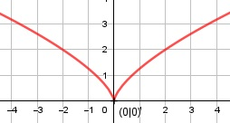

Aufgabe 137 f(x) = (2x2)1/3 Kettenregel erste Ableitung: f'(x) = 1/3 * 4x * (2x2)-2/3 = 4 4 * x f'(x) = --- x * (2x2)-2/3 = -------------- 3 3 * 4 * x 4 * x f'(x) = ------------ = -------------- 3 * 3 * x * 4 4 f'(x) = ----------- = --- * (4x)-1/3 3 * 3 Kettenregel zweite Ableitung: 1 4 f''(x) = - --- * --- * 4 * (4x)-4/3 3 3 16 24 f''(x) = - ---------------- = - ---------------- 9 * 9 * 24 f''(x) = - ------------------- 9 * 44/3 * 212/3 f''(x) = - -------------------- 9 * (22)4/3 * 212/3 24/3 f''(x) = - ----------------- = - ---------- 9 * 28/3 * 9 * Zur Beurteilung, ob f'''(x) ≠ 0: (Begründung siehe Aufgabe 105) u = 24/3, u' = 0 u' 0 f'''(x) = --- = ---------- = 0 für alle x v 9 * Definitionsbereich: -∞ < x < ∞ (2x2)1/3 ≥ 0 für alle x Wertebereich: 0 ≤ f(x) < ∞ Symmetrie: f(-x) = (2(-x)2)1/3 = (2x2)1/3 = f(x) --> Achsensymmetrie -f(-x) = -(2x2)1/3 ≠ f(x) --> keine Punktsymmetrie Nullstellen: f(x) = 0 (2x2)1/3 = 0 |3 2x2 = 0 |:2 x2 = 0 |ⱱ x = 0 N(0|0) Schnittpunkt mit der y-Achse: x = 0 f(0) = (2 * 02)1/3 = 0 Sy(0|0) Extrempunkte: f'(x) = 0 4 --------- = 0 |*3 * 3 * 4 = 0 --> Widerspruch --> keine Extrempunkte Wendepunkte: f''(x) = 0 - 24/3 --------- = 0 |*9 * 9 * -24/3 = 0 --> Widerspruch --> keine Wendepunkte Graph:
